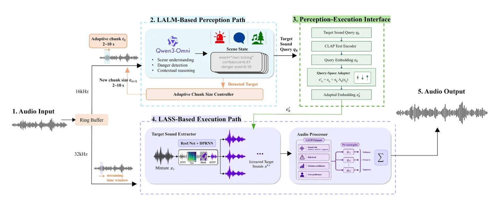

For people who hear less than they used to, like my grandfather.

For whom
My grandfather’s hearing has been fading for years. Watching him miss things taught me to notice the quiet details of everyday life, and to worry about the loud ones he might not hear at all.
SmartHearing is for him, and for anyone whose hearing aid makes the world louder without making it clearer.
The problem
A conventional hearing aid amplifies speech. But which sound matters most depends on where you are: a car horn in the street, a voice in a restaurant, a crying infant at home. Amplify the wrong one and the important sound is buried.
The same device must bring forward a different sound in each place. SmartHearing listens to the scene first, then decides.
What we built
Perceive, decide, act. A large audio language model describes each sound in the scene: what it is, how dangerous, how relevant. A Query-space Adapter translates those descriptions into the language a sound separator understands, and the separator extracts each source so the device can raise warnings, keep useful ambience and suppress noise.

Where it stands
On 145 unseen mixtures the gains held, and in a 101-person listening test SmartHearing was rated most salient in 50.5% of trials, against 28.1% and 21.5% for the baselines. The work is patented and submitted to ICASSP 2027, and it is now the main product of Lingtong, the company I founded.